Nos espaces : cuisine, salons, patio et aire de jeux
Au-delà des 9 suites, Dar Aïcha se vit dans ses espaces communs — la cuisine extérieure avec bar BBQ, la cuisine intérieure, les salons façon majlis, le patio à la fontaine en zellige et un coin balancelles pour les enfants.

Le repaire idéal pour les repas en plein air
Comptoir de bar en marbre, table assortie et coin barbecue abrité derrière une claustra en fer forgé : la cuisine extérieure prolonge le patio pour les grillades, l'apéritif et les repas en famille face à l'oliveraie.
- Bar en marbre et table extérieure assortie
- Coin barbecue équipé, évier et rangements
- Vue dégagée sur la campagne et l'oliveraie
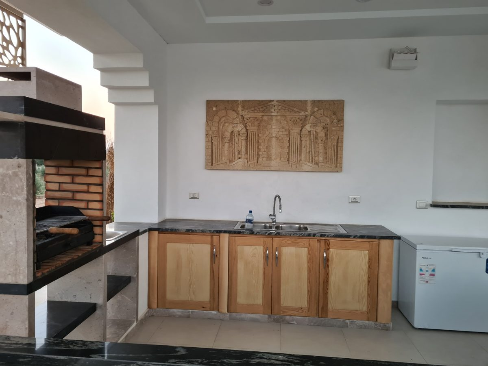
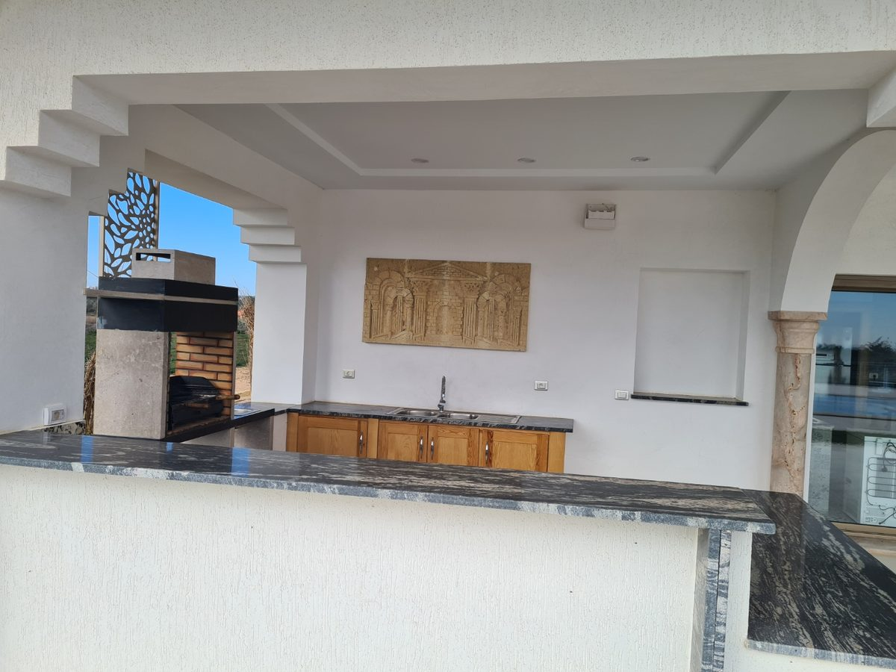
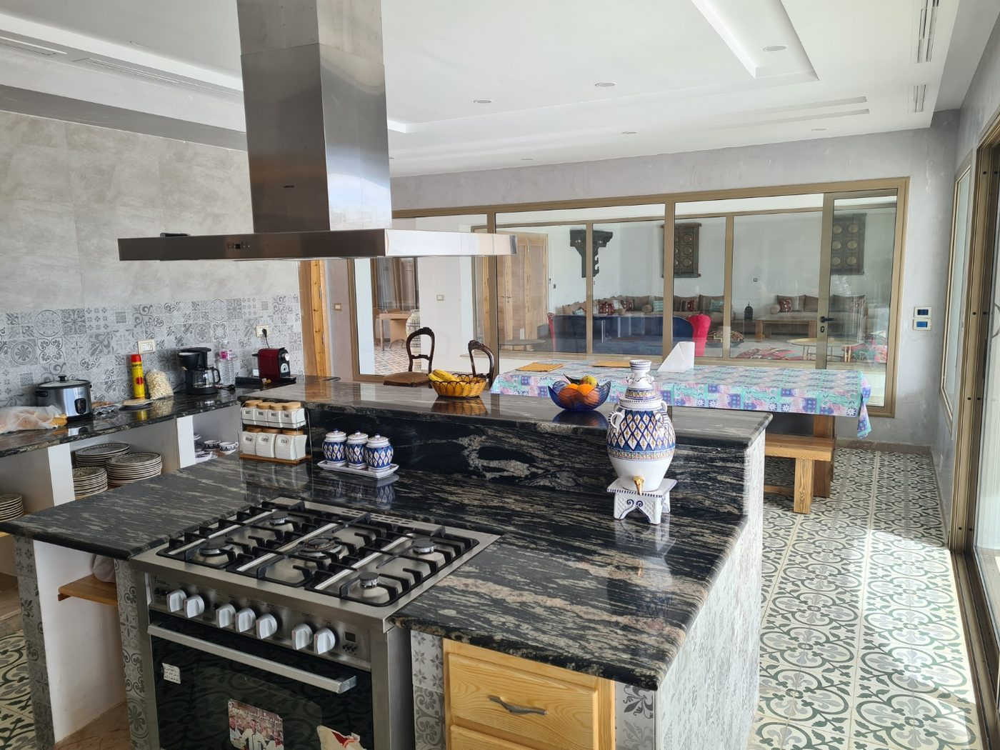
Une cuisine grande ouverte sur la piscine
Îlot central en granit, piano de cuisson 5 feux et grandes baies vitrées ouvertes sur la terrasse et la piscine : la cuisine intérieure est le cœur convivial de la villa, pensée pour cuisiner en famille tout en gardant vue sur l'extérieur.

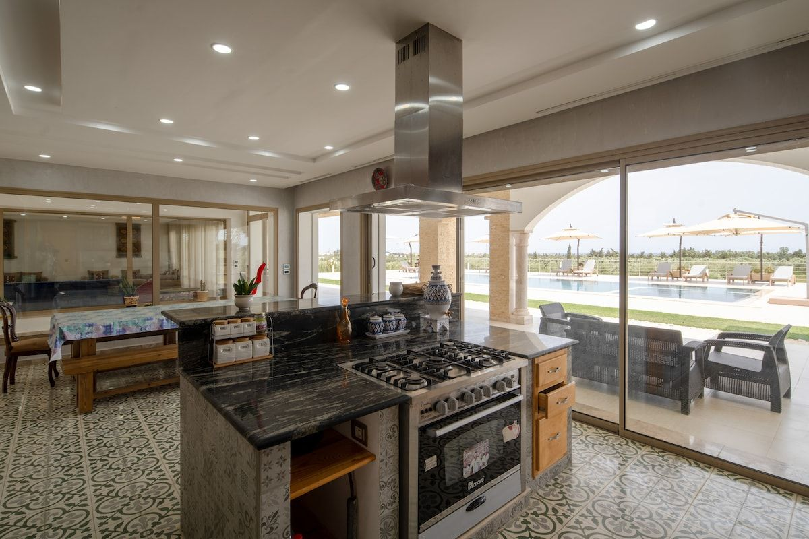

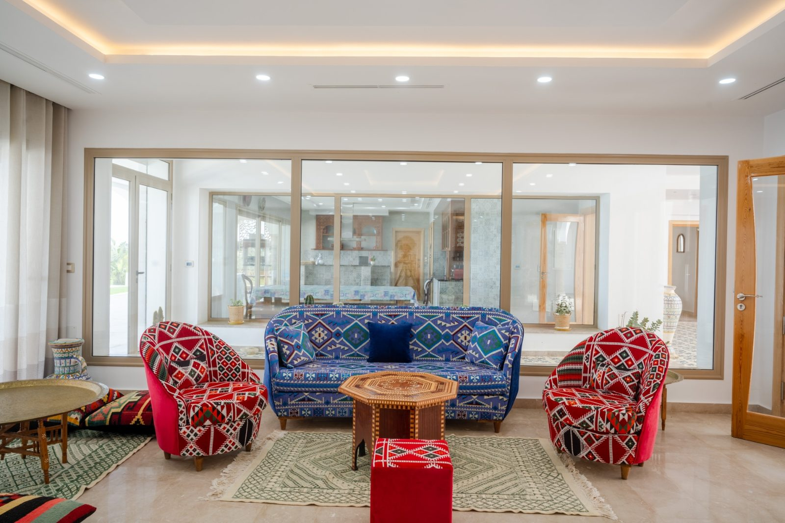
L'art de recevoir à la tunisoise
Banquettes basses, coussins berbères colorés et tapis traditionnels : les salons de Dar Aïcha reprennent les codes du majlis tunisois pour des soirées conviviales entre canapés et grandes baies vitrées ouvertes sur le patio.
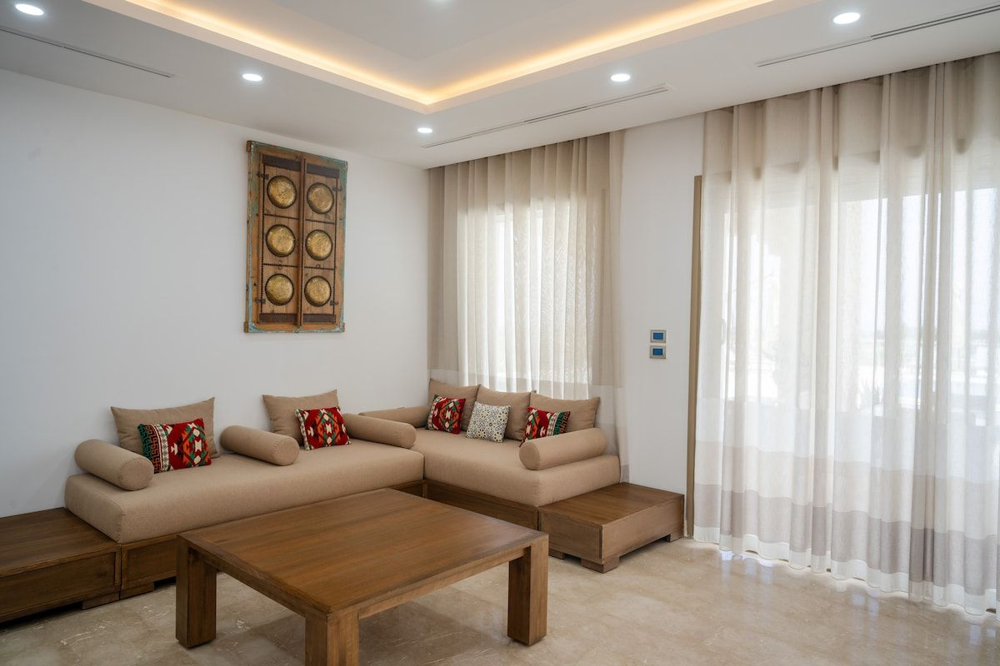
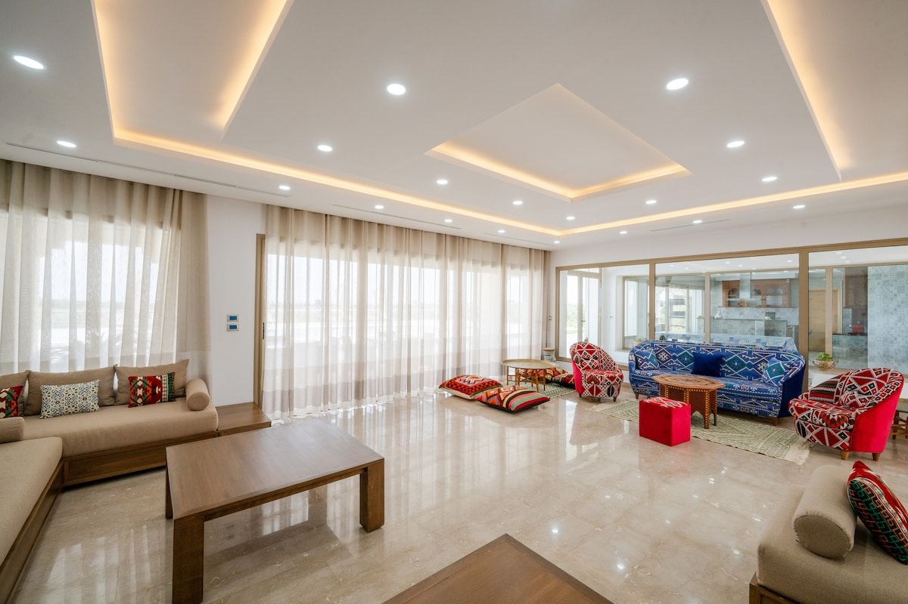
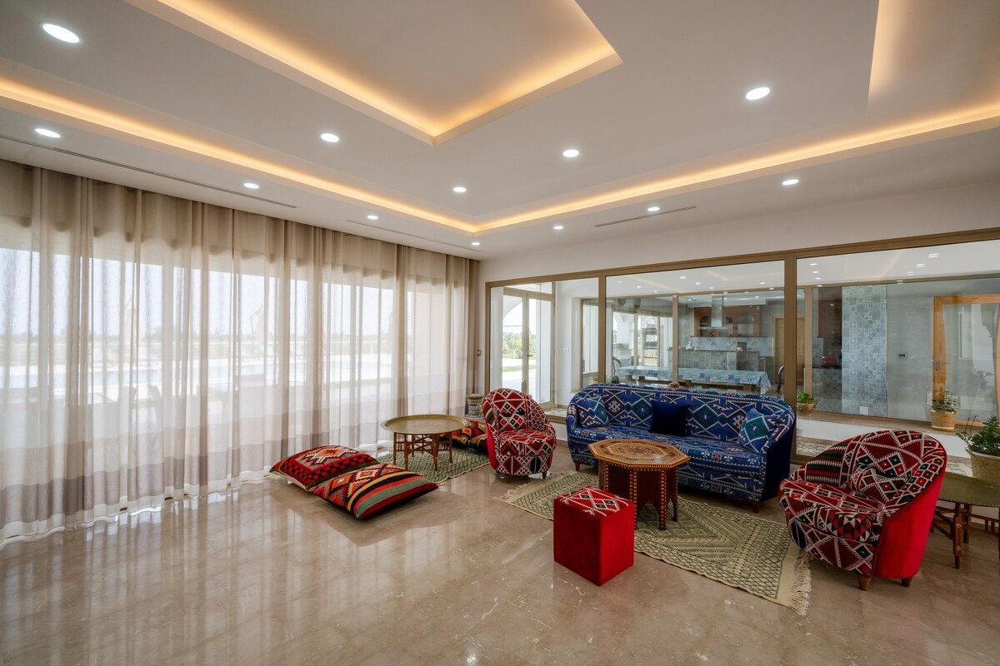

Une fontaine en zellige au cœur de la villa
Le patio voûté distribue les espaces de vie autour d'une fontaine à étages en zellige, dans la pure tradition tunisoise. Colonnades en pierre et coin repas ombragé en font un lieu de passage et de détente à toute heure de la journée.
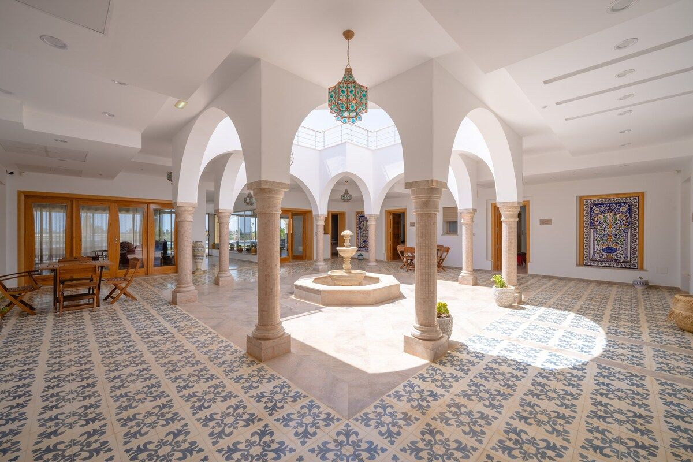


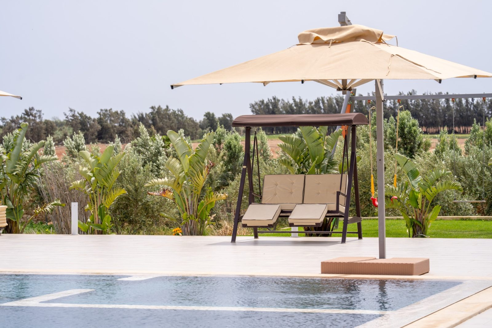
Un coin balancelles au bord de la piscine
Pensé pour les familles, un espace de jeux avec balancelles et portique est installé près de la piscine, entre palmiers et jardins — pour que les enfants profitent eux aussi de leur séjour à Dar Aïcha.
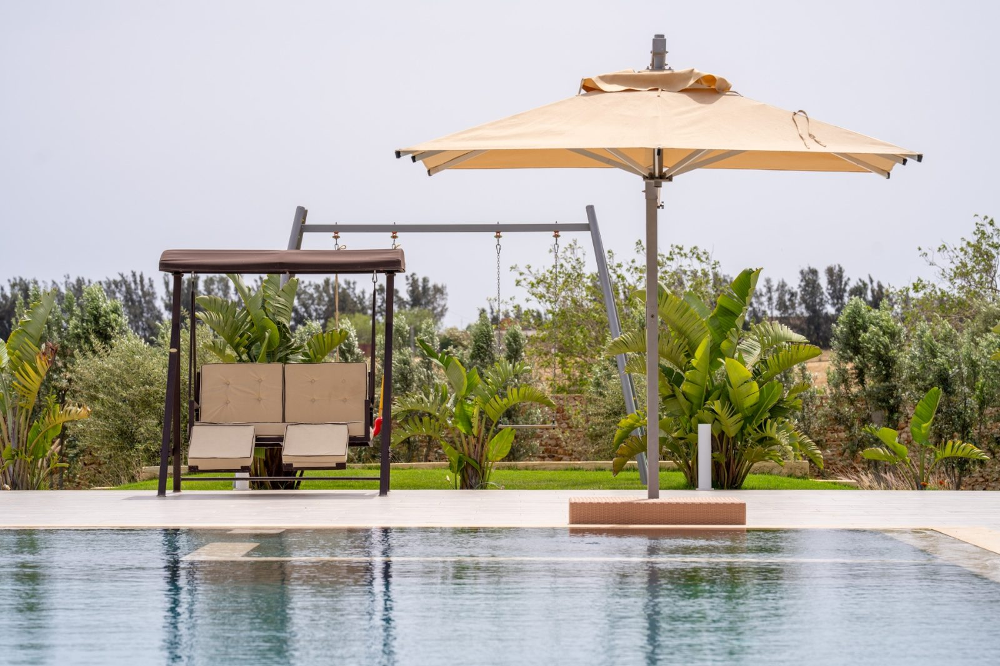


Envie de voir ces espaces en vrai ?
Explorez aussi l'architecture de la villa et ses 9 suites, ou demandez directement un devis pour votre séjour.